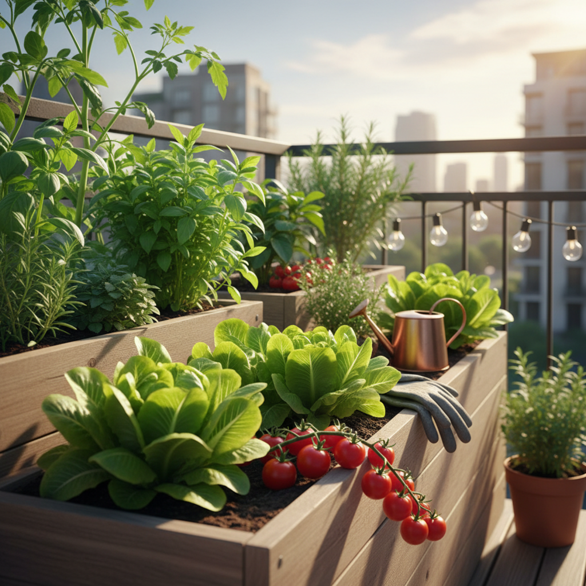

Nuestro Blog
Consejos, recetas y noticias del mundo orgánico.

5 Pasos para Iniciar tu Propio Huerto en Casa
¿Sueñas con cosechar tus propias verduras? Te mostramos cómo empezar un huerto urbano desde cero, sin importar el espacio que tengas.
Leer más
Recetas Saludables con Productos de Temporada
Aprovecha la frescura de las espinacas y zanahorias de esta temporada con estas tres recetas fáciles, deliciosas y llenas de nutrientes.
Leer más
Beneficios de Consumir Alimentos Orgánicos
Descubre por qué elegir productos orgánicos no solo es bueno para tu salud, sino también para el medio ambiente y los agricultores locales.
Leer más